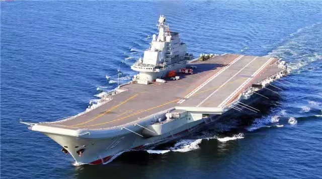
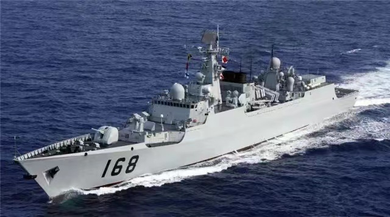
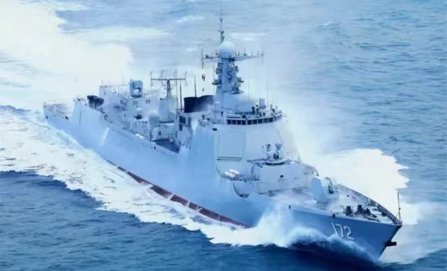
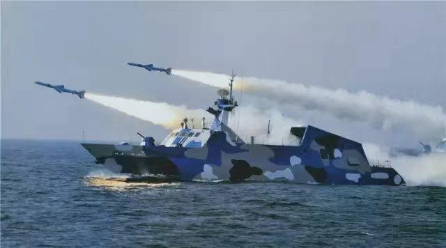
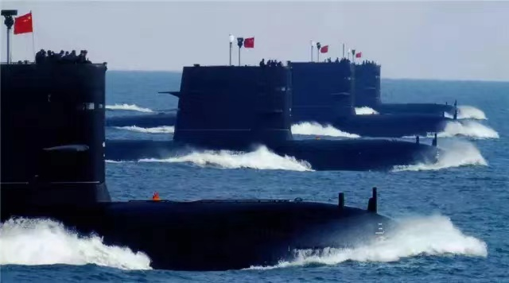
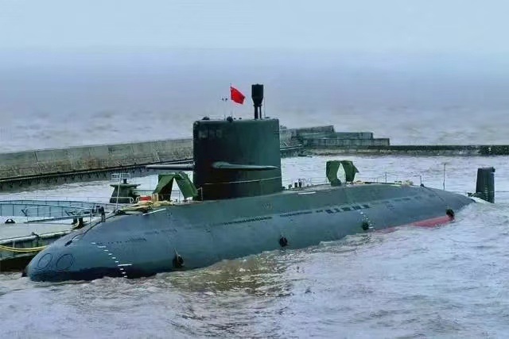
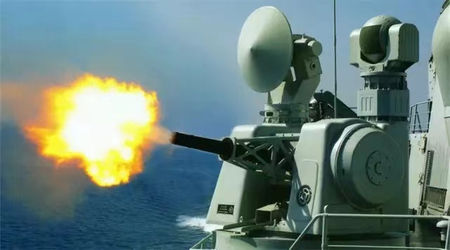
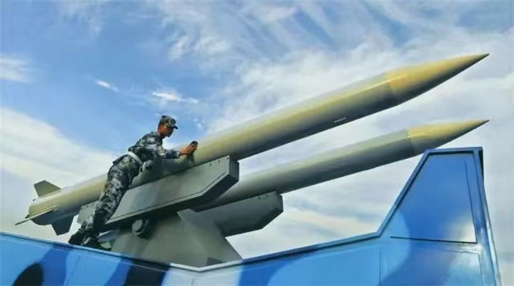
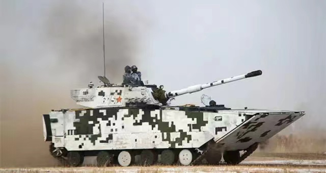
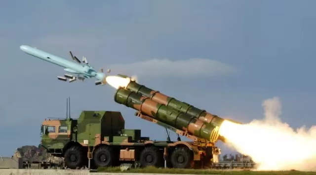
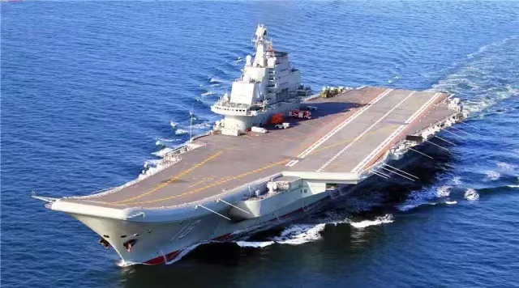
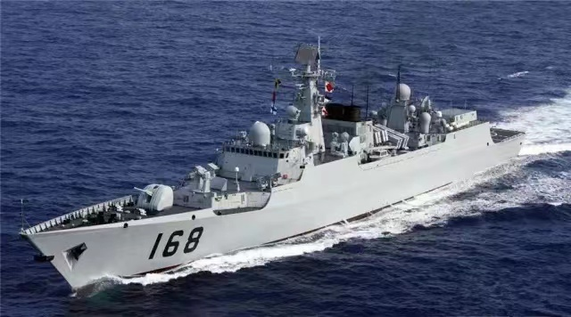
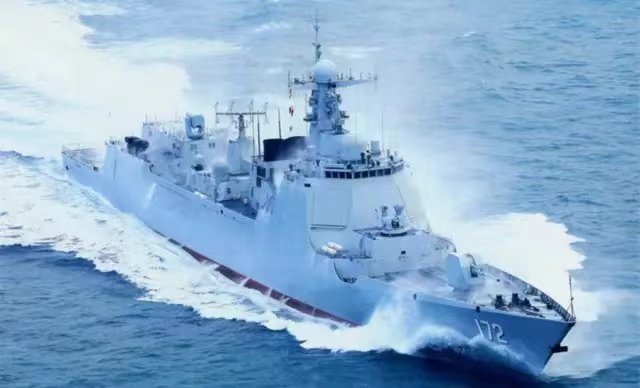
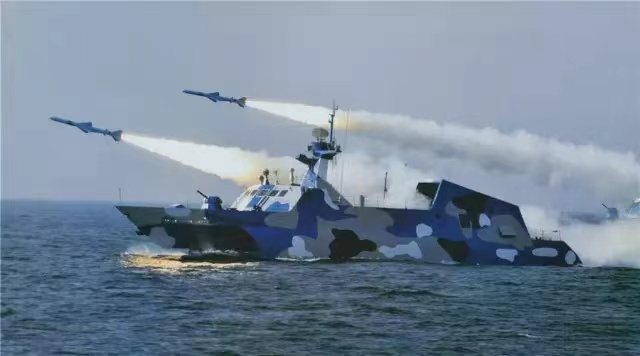
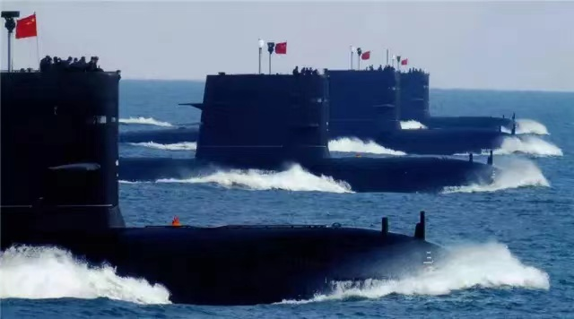
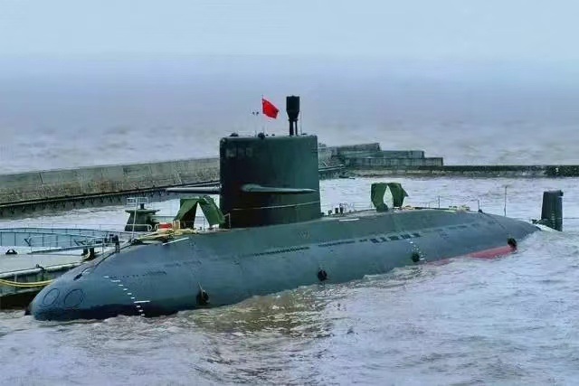
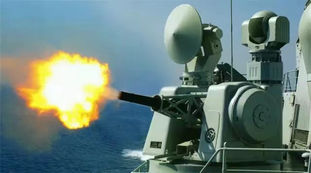
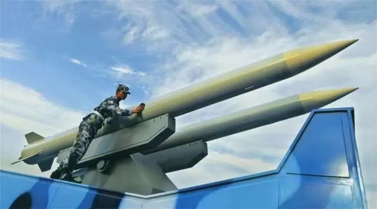
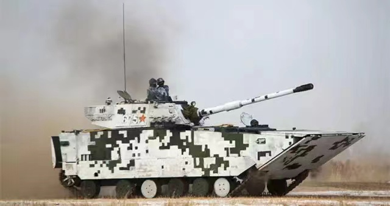
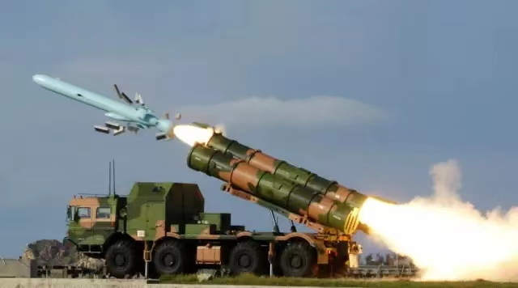
水面舰艇
水面舰艇部队，是海军的基本作战兵力，是航空母舰、巡洋舰、驱逐舰、护卫舰艇、布雷舰、扫雷舰艇、登陆舰艇、猎潜艇、导弹艇、鱼雷艇等战斗舰艇部队和勤务舰船部队的总称。
舰队核心——航空母舰
在航空母舰问世将近百年之际，辽宁舰的正式服役标志着中国实现了航母“零”的突破，向着海上强国的目标迈出了重要一步。
中国海军第一艘航母——辽宁舰。
主力舰种——驱逐舰
现代海军中一种多用途的军舰。装备有防空、对舰和反潜武器，广泛的作战职能使得驱逐舰成为海军中最重要的舰种之一。
051C型驱逐舰——115沈阳舰。
攻防兼备——护卫舰
护卫舰的吨位和火力仅次于驱逐舰，它是当代世界各国建造数量最多、分布最广、参战机会最多的一种中型水面舰艇。
“近海利器”056型轻型护卫舰——582蚌埠舰。
以小博大——导弹快艇
导弹快艇是以反舰导弹为主要武器，用于近海作战的小型战斗舰艇，它已经取代了过去鱼雷快艇在水面作战中的角色。
022型隐形导弹艇
“拆弹部队”——扫雷舰
扫雷舰专门用来清扫海中的水雷，以保护船只航行与航道安全，一般属于二线作战舰艇。
081型扫雷舰——810靖江舰。
从海上进攻——登陆舰（艇）
登陆舰（艇）也叫做两栖舰艇，是为输送登陆兵员、武器装备及补给品登陆而专门制造的舰艇。
071型船坞登陆舰——998昆仑山舰。
军舰“保姆”——补给舰
主要用于向航母战斗编队、舰船供应所需的燃油、弹药、食品、备件等补给品，具有综合的保障和补给能力
903A型综合补给舰——890巢湖舰。
“和平方舟”——医院船
大型医院船具有远海医疗救护能力，可在大规模灾害之际提供紧急救援，是现代海军的重要标志之一。我国海军目前仅有一艘医院船“和平方舟”，医疗设备配置相当于国内三级甲等医院水平。
超万吨级大型专业医院船——和平方舟医院船。